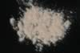

|
|
(For further information on spectroscopy, see:
http://speclab.cr.usgs.gov)
TITLE: Clinozoisite HS299 DESCRIPT
DOCUMENTATION_FORMAT: MINERAL
SAMPLE_ID: HS299
MINERAL_TYPE: Sorosilicate
MINERAL: Clinozoisite (Epidote group)
FORMULA: Ca2Al3(SiO4)3(OH)
FORMULA_HTML: Ca2Al3(SiO4)3(OH)
COLLECTION_LOCALITY: Mexico
ORIGINAL_DONOR: Hunt and Salisbury Collection
CURRENT_SAMPLE_LOCATION: USGS Denver Spectroscopy Laboratory
ULTIMATE_SAMPLE_LOCATION: USGS Denver Spectroscopy Laboratory
SAMPLE_DESCRIPTION:
Dimorphous with Zoisite.
"This sample forms a continuous series with epidote. The sample contains some epidote and quartz impurities. The sample probably contains some Mn3+ and Fe3+ substituting for its aluminium, which would explain its reddish-brown color. The presence of these ions would also explain absorption features at 0.41, 0.46, 0.55, and 0.8 µm. Absorption features attributed to the hydroxyl and water appear at longer wavelengths than normal."
Hunt, G.R., J.W. Salisbury, and C.J. Lenhoff, 1973, Visible and Near-Infrared Spectra of Minerals and Rocks: VI. Additional Silicates. Mod. Geol. 4, pp 85-106.
IMAGE_OF_SAMPLE:

END_SAMPLE_DESCRIPTION.
XRD_ANALYSIS:
40 kV - 30 mA, 7.0-9.5 keV
File: clzst299_mdi, *.out (smear mount on quartz plate)
References: Borg and Smith (1969); Huebner's reference patterns
Found: monoclinic zoisite, subordinate quartz
Sought but not found: zoisite
Comment: Monoclinic zoisites have similar patterns. Grains are white (quartz),
pink and yellow. Based on macroscopic color, eliminate epidote (green) and
piemontite (red). Conclude HS-299 from a color-zoned clinozoisite crystal, but
the origin of the colors is unknown. Reflections are very sharp, indicating
excellent crystallinity.
END_XRD_ANALYSIS.
COMPOSITIONAL_ANALYSIS_TYPE: None # XRF, EM(WDS), ICP(Trace), WChem
COMPOSITION_TRACE: None
COMPOSITION_DISCUSSION:
END_COMPOSITION_DISCUSSION.
MICROSCOPIC_EXAMINATION:
mode:
85-90 vol% clinozoisite
10-15 vol% epidote
tr? qtz
tr opaques
Clinozoisite, 2V=60 degrees, anomalous blue color, pink in transmitted light, many grains lie on cleavages giving close to optic axis figures, grains too small for sign determination, unclear whether this is epidote or clinozoisite, although green grains are probably epidote and pink grains clinozoisite. I suggest this sample not be used in the database due to significant epidote contamination. G. Swayze.
END_MICROSCOPIC_EXAMINATION.
SPECTROSCOPIC_DISCUSSION:
END_SPECTROSCOPIC_DISCUSSION.
SPECTRAL_PURITY: 1d2b3c4_ # 1= 0.2-3, 2= 1.5-6, 3= 6-25, 4= 20-150 microns
| LIB_SPECTRA_HED: | where | Wave Range | Av_Rs_Pwr | Comment |
|---|---|---|---|---|
| LIB_SPECTRA: | splib04a r 1164 | 0.2-3.0µm | 200 | g.s.= 40 µm |
| LIB_SPECTRA: | splib05a r 2091 | 0.2-3.0µm | 200 | g.s.= |
| LIB_SPECTRA: | splib06a r 5952 | g.s.= | ||
| LIB_SPECTRA: | splib06a r 5965 | g.s.= |
{kind=link}